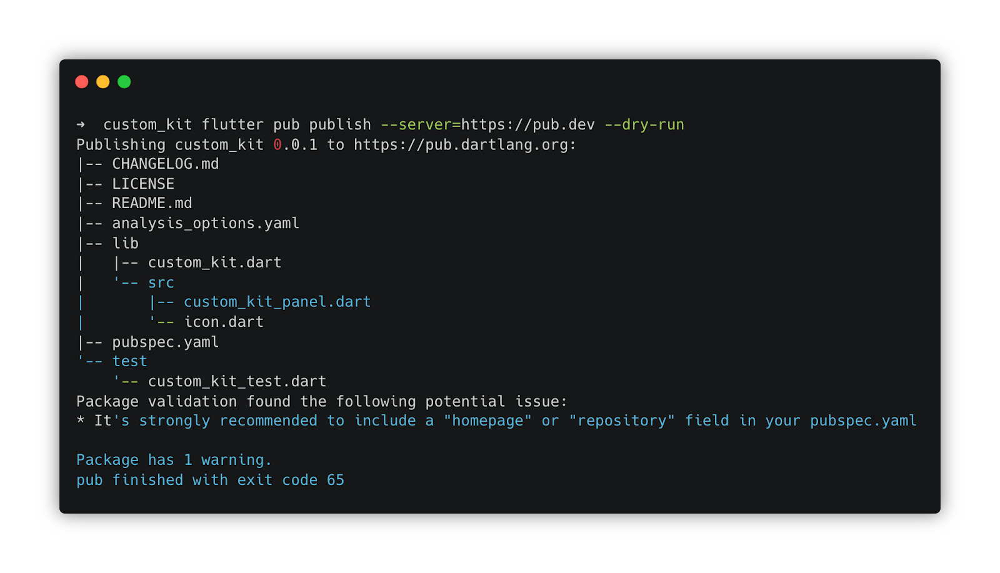

为什么要创建 flutter_ume？
flutter_ume 是一款针对 Flutter 应用开发的应用内调试工具平台。最初是 2020 年 6 月，由字节跳动西瓜视频 Flutter 基础技术团队孵化，经过内部大量 Flutter 开发者的使用及共建，2021 年 7 月开源 flutter_ume 社区版本。

应用内调试
一直以来，Flutter 开发者习惯于在计算机上使用 Flutter DevTools 对 Flutter 应用进行调试。这样做存在一定不便，一旦脱离了计算机，如交付给测试人员/产品经理/设计师的测试版本，开发者想要获取应用运行信息将无从下手。
flutter_ume 及相关调试插件作为 Dart Package 接入到宿主应用中，直接将应用的有用数据暴露给开发人员，甚至可以动态调整应用的运行状态。由此，无需依赖计算机，无需 attach 调试器，一次接入后续可直接使用，直接在应用内完成对程序的诊断。
插件扩展能力
flutter_ume 代码包本身是一个调试工具平台，不具备调试能力，但社区版提供了十余个功能各异的调试插件；社区中也有一些开发者贡献了一些优质插件。假如这些插件仍然无法满足你的定制化需求，你也可以通过依赖 flutter_ume 提供的基础能力，来创建定制能力的插件。
多平台兼容
由于 Flutter 是一个跨多平台的自渲染框架，flutter_ume 及其插件也是一个个的 Dart Package，因此 flutter_ume 可以随宿主应用兼容多个平台（因部分功能在各平台上实现有差异，所以无法在所有平台上提供完整的插件功能）。开发者也可根据实际情况，为特定平台开发定制插件。
你将构建出什么？
跟随本 codelab，你将：
- 创建出一个具有简单 UI 的 Flutter App，它包含多个模块的页面
- 在该应用中接入 flutter_ume，并体验如何在应用内调试应用
- 切换至 Release 模式构建应用，模拟测试用途的应用，在 Release 模式下体验调试能力
- 为 flutter_ume 编写一个自定义功能的插件
本 codelab 重点关注 flutter_ume 的接入、使用及自定义插件的编写，对于相关性不大的胶水代码，提供了完整的示例，开发者可根据自己的情况拷贝这些代码。
如果你之前已经在本地运行过 Flutter 应用，你可以跳过本小节。但请尽量确保本地环境与本文推荐环境版本匹配。
请根据自身需要，配置 Flutter 运行平台对应的开发环境。详尽的环境配置文档请见：https://flutter.cn/docs/get-started/install 。
配置 IDE
开发 Flutter 应用，官方有两种推荐 IDE：VSCode 与 Android Studio。请根据喜好任选其一。
- VSCode 下载地址：https://code.visualstudio.com/
- Android Studio 下载地址：https://developer.android.google.cn/
VSCode
在 VSCode 中，左侧边栏选择 Extensions，搜索 "Flutter" 与 "Dart" 并点击 Install 安装。
Android Studio
在 Android Studio 中，点击菜单中的 Android Studio-Preferences，点击左侧 Plugins，搜索 Flutter，点击 Install，会询问是否安装依赖 Dart，选择 Yes。

安装 Flutter SDK
在不同平台上安装 Flutter SDK 不尽相同，请根据自身情况安装。
- macOS：https://flutter.cn/docs/get-started/install/macos
- Windows：https://flutter.cn/docs/get-started/install/windows
- Linux：https://flutter.cn/docs/get-started/install/linux
配置环境变量
在安装完 Flutter SDK 后，请检查你的环境变量中，是否将 Flutter SDK 的路径配置到 PATH 中，且配置了 PUB_HOSTED_URL 以及 FLUTTER_STORAGE_BASE_URL。

此时，在完成了上述操作后，在终端输入 flutter doctor，显示无 error，说明你已经完成了 Flutter 开发环境的配置工作了。
创建 Flutter 工程
编写 Flutter App 从创建工程开始。
以下是创建工程的步骤：
- 打开"终端"
- 执行
flutter create --platform ios,android,macos demo_app
- 此处的
--platform参数是你要创建的 Flutter 应用所运行的平台，每一个平台将会对应创建出该平台的应用 "壳工程"。 - demo_app 是你为项目设定的名字，请使用小写字母、数字、下划线的形式命名
在模拟器或真实设备上运行应用
- 进入项目目录，执行
cd demo_app - 执行
flutter devices检查当前运行了哪些设备
- 假如没有找到任何设备，请先检查是否连接了真实设备（且开启了开发者模式）或启动了模拟器等
- 执行
flutter run -d xx
- "xx" 是上一步获取的设备标识，在这里请替换为该标识。如图中 iOS 模拟器标识为 FD3F5A68-C2A7-4CDC-B942-6BF90B33908B，本机（macOS 电脑）标识为 macos，本地浏览器（web 平台）标识为 chrome。
- 在一段时间的等待后，我们会发现相应的设备启动了 Flutter 应用（左图是 macOS 上运行的 Flutter 应用，右图是在 iOS 模拟器上运行的 Flutter 应用）
使用 IDE 运行工程
前文讲述的方式，通过在终端通过命令将 Flutter App 运行起来。对于断点调试、更加丰富的交互形式来说，安装了 Flutter 和 Dart 插件的 IDE 是一个更加强大的工具。因此在本小节，我们将使用 IDE 运行 Flutter App。
使用 VSCode 运行工程
在 VSCode 中找到工程目录打开。

点击左侧的 Run & Debug 选项中，并点击 Run and Debug，选择 Dart & Flutter。
使用 Android Studio 运行工程

打开 Android Studio，选择 Open，找到项目目录。
在左侧 Project 窗口中找到 pubspec.yaml，双击打开，在右侧上方 Flutter commands 中选择 Pub get 按钮更新依赖。
完成依赖更新后，在 Android Studio 上方选择要使用的设备，并点击运行按钮。
为应用添加自定义功能
接下来我们为刚刚创建的 demo_app 添加一些代码，后续作为 flutter_ume 的调试示例。你可以自行发挥，代码不必与本小节的内容完全一致。为了加快 Codelab 的速度，你可以直接从这里下载准备好的 Demo 代码示例。
demo_app.1.movie.zip：https://lf3-static.bytednsdoc.com/obj/eden-cn/clkeh7phrubz/devfest2022/demo_app.1.movie.zip
在压缩包中有三个文件（夹）：assets 用于存放静态资源文件、lib 用于存放代码文件、pubspec.yaml 描述了工程的信息。
我们将压缩包中的代码与资源对应替换新创建的 Demo 工程中的文件。
运行起我们的 Demo 工程，可以看到设备上展示如下图所示。

上一节运行起 Demo 工程后你可能会发现，在界面上有 "LEFT" 与 "RIGHT" 两个 Page，它们看起来长得完全一样。但在示例代码中会发现，这两个页面并没有复用同一份代码，而是具有两套代码，以及两种 "结构"。
我们尝试将设备旋转 90 度，会发现 "LEFT" 页面将变为双列样式，但 "RIGHT" 页面仍然为单列样式。
下图为 "left_page.dart" 中的 GridView 与 GridCard。

下图为 "right_page.dart" 中的 ListView 与 ListCard。

接入 flutter_ume 框架
pubspec.yaml
dev_dependencies:
flutter_ume: ^1.1.1+1将正在运行的应用退出。修改 pubspec.yaml，在对应位置添加依赖。
在 Demo 工程目录下执行 flutter pub get。
main.dart
import 'package:flutter_ume/flutter_ume.dart';
void main() => runApp(const UMEWidget(child: MyApp()));在 main.dart 中引入 flutter_ume 依赖，并修改 runApp 方法。
再次运行 Demo 工程，有没有发现此时与刚才有什么不同？

我们可以发现在屏幕右下角多了一个圆形 "Flutter Logo" 按钮。这正是 flutter_ume 的入口。
由于我们在 pubspec.yaml 中是以 "dev_dependencies" 的形式引入的 flutter_ume，因此在这里我们同样需要修改一点点代码。
main.dart
void main() {
if (kDebugMode) {
runApp(const UMEWidget(
child: MyApp(),
));
} else {
runApp(const MyApp());
}
}至此 UME 就成功接入了应用。
接入调试插件
可能你发现了，我们刚刚接入的 flutter_ume "按钮" 点开好像什么都没有。接下来我们将调试插件接入到应用中。同样地，在 pubspec.yaml 中添加插件依赖。
pubspec.yaml
dev_dependencies:
flutter_ume_kit_ui: ^1.0.0
flutter_ume_kit_console: ^1.0.0
flutter_ume_kit_show_code: ^1.0.0
flutter_ume_kit_perf: ^1.0.0
flutter_ume_kit_device: ^1.0.0
dependency_overrides:
flutter_ume: ^1.1.1+1
vm_service: ^9.4.0请注意，由于需要对更广泛的 Flutter 版本支持，需要在 dependency_overrides 中，对 vm_service 的依赖版本 override。
在 main.dart 文件中添加对插件包的引用。
main.dart
import 'package:flutter_ume_kit_ui/flutter_ume_kit_ui.dart';
import 'package:flutter_ume_kit_perf/flutter_ume_kit_perf.dart';
import 'package:flutter_ume_kit_show_code/flutter_ume_kit_show_code.dart';
import 'package:flutter_ume_kit_console/flutter_ume_kit_console.dart';
import 'package:flutter_ume_kit_device/flutter_ume_kit_device.dart';在 main 方法中，添加注册插件的方法。
main.dart
void main() {
if (kDebugMode) {
PluginManager.instance
..register(WidgetInfoInspector())
..register(WidgetDetailInspector())
..register(AlignRuler())
..register(ColorPicker())
..register(TouchIndicator())
..register(Performance())
..register(ShowCode())
..register(MemoryInfoPage())
..register(CpuInfoPage())
..register(DeviceInfoPanel())
..register(Console());
runApp(const UMEWidget(
child: MyApp(),
));
} else {
runApp(const MyApp());
}
}退出应用，再次重新执行 flutter pub get，并运行工程。
点击屏幕上的圆形 Flutter Logo 按钮，可以看到弹出窗口中已经出现了我们注册的调试插件。
使用插件调试应用
点击插件列表中的 "WidgetInfo" 按钮，并点选屏幕上的组件。


此时可以看到调试界面上出现了这两组 UI 对应的 Widget 所在文件及行号。
回到调试工具目录，选择 ShowCode。

在搜索框输入 package:demo_app/，在左侧菜单中可以找到当前运行的，本示例工程的所有代码。
在前面的步骤中，我们已经成功地在 Debug mode 中接入了 flutter_ume。
但有时候，可能你需要将测试版本交付给产品经理、设计师、测试人员等，以用于验收应用的质量。通常来说，这种测试版本是在 release mode 下构建的，才能获得等同于真实线上用户的体验，确保测试环节的准确性。在这样的条件下，如果有像 flutter_ume 这样的调试工具就再好不过了。好消息是，flutter_ume 可以在 release mode 下使用。仅需一点点小的调整。
在 pubspec.yaml 中修改代码，将 flutter_ume 相关的所有依赖从 dev_dependencies 里面移动到 dependencies 中。
pubspec.yaml
dependencies:
flutter_ume: ^1.1.1+1
flutter_ume_kit_ui: ^1.0.0
flutter_ume_kit_console: ^1.0.0
flutter_ume_kit_show_code: ^1.0.0+1
flutter_ume_kit_perf: ^1.0.0
flutter_ume_kit_device: ^1.0.0在 main 方法中，将注册插件的代码与 UMEWidget 相关代码从 kDebugMode 的分支中移除。
main.dart
void main() {
PluginManager.instance
..register(WidgetInfoInspector())
..register(WidgetDetailInspector())
..register(AlignRuler())
..register(ColorPicker())
..register(TouchIndicator())
..register(Performance())
..register(ShowCode())
..register(MemoryInfoPage())
..register(CpuInfoPage())
..register(DeviceInfoPanel())
..register(Console());
runApp(const UMEWidget(
child: MyApp(),
));
}退出应用，执行下 flutter clean，再次重新执行 flutter pub get，使用 release 模式运行工程。

在 Release 模式下，我们仍然获得了一些调试信息。（部分插件功能在 Release 模式下不可用）
创建自定义插件包
切换到 demo_app 的同级目录，执行 flutter create -t package custom_kit。

编写自定义插件代码
在 custom_kit 中的 pubspec.yaml 中添加对 flutter_ume 的依赖。
pubspec.yaml
dependency:
flutter_ume: ^1.1.1打开 custom_kit 工程，编写插件内容。
custom_kit_panel.dart
library custom_kit;
export 'src/custom_kit_panel.dart';新建目录 src，并创建 custom_kit_panel.dart
src/custom_kit_panel.dart
class CustomKitPanel {
}flutter_ume 为调试工具提供了诸多公开 API，我们自定义的插件可以基于这些 API 构建。引入 flutter_ume 的依赖，并声明实现 Pluggable。
src/custom_kit_panel.dart
import 'package:flutter_ume/flutter_ume.dart';
class CustomKitPanel implements Pluggable {
}此时 Android Studio 或 VSCode 会提示我们 Missing concrete implementations of ... and 1 more. 因为我们声明了 CustomKitPanel 要实现 Pluggable，但未真正有方法对这些方法签名进行实现。
可以利用 Android Studio 或 VSCode 的 Flutter 插件自动提示功能，为我们自动补全缺失的方法实现。

此时，CustomKitPanel 被补充为如下代码：
src/custom_kit_panel.dart
class CustomKitPanel implements Pluggable {
@override
Widget? buildWidget(BuildContext? context) {
// TODO: implement buildWidget
throw UnimplementedError();
}
@override
// TODO: implement displayName
String get displayName => throw UnimplementedError();
@override
// TODO: implement iconImageProvider
ImageProvider<Object> get iconImageProvider => throw UnimplementedError();
@override
// TODO: implement name
String get name => throw UnimplementedError();
@override
void onTrigger() {
// TODO: implement onTrigger
}
}在代码中我们仍然能看到一些 TODO 与 throw UnimplementedError() 需要我们对其进行补充。
- buildWidget 方法用于返回插件的 UI 面板
- displayName 方法用于提供插件展示出来的名字
- iconImageProvider 方法用于提供插件在调试面板上的图标
- name 用于作为插件的唯一标识
- onTrigger 用于调试面板上点按插件图标后的 trigger 行为
src/custom_kit_panel.dart
import 'package:flutter/material.dart';
import 'package:flutter_ume/flutter_ume.dart';
import 'icon.dart' as icon;
class CustomKitPanel implements Pluggable {
@override
Widget buildWidget(BuildContext? context) => Container(
width: 200,
height: 200,
decoration: BoxDecoration(
borderRadius: BorderRadius.circular(24.0),
color: Theme.of(context!).backgroundColor,
),
child: Center(child: Text(displayName)),
);
@override
ImageProvider<Object> get iconImageProvider => MemoryImage(icon.iconBytes);
@override
String get name => 'CustomKit';
@override
String get displayName => 'CustomKit';
@override
void onTrigger() {
debugPrint('onTrigger $displayName');
}
}
在 demo_app 引入 custom_kit
在 pubspec.yaml 中添加对 custom_kit 的声明
pubspec.yaml
dependencies:
custom_kit:
path: ../custom_kit执行 flutter pub get，修改 main.dart 中的代码，引入 custom_kit
main.dart
import 'package:custom_kit/custom_kit.dart';
void main() {
PluginManager.instance
..register(CustomKitPanel());
}
重新运行 Demo App，点击 flutter_ume 面板中的 custom_kit 插件图标，可以看到 CustomKit 的面板已经出现在屏幕上了。
在完成了以上内容后，可以考虑将你编写的 custom_kit 发布到社区，与其他 flutter_ume 的用户共享这一成果。
发布包之前请使用 flutter pub login 命令登录到 pub。
要发布一个 Flutter/Dart 包，可以使用 flutter pub publish 命令。请注意，Dart 包的发布，是不可逆行为，因此请慎重。7 天内发布的包，可以被撤回，但 "撤回" 不等同于永久消失，而是被标记为 "撤回状态"。

添加 --dry-run flag 的目的是用于仅验证包的合法性，而不真正发布包。一般来说用于发布前的最后检查。

如图若有 warning 或 error 都会有相应提示告知开发者，对其做相应整改即可。
恭喜，你已顺利完成你的 flutter_ume 应用内调试工具的体验之旅！
你创建了一个新工程，将 flutter_ume 接入到其中，体验了 flutter_ume 开发团队提供的调试插件，并亲自动手尝试编写了一个调试插件。这很了不起，未来希望 flutter_ume 能持续为你提供便捷的应用内调试能力，助你提升开发效率。
当然也欢迎你在开发过程中发现痛点，为 flutter_ume 的社区提供更加丰富强大的调试工具；或者为现有的调试工具进行改进，修复问题。
- 由 flutter_ume 开发团队维护的调试工具请见 https://github.com/bytedance/flutter_ume
- 更多来自社区的调试插件解决方案请见 https://github.com/cfug/flutter_ume_kits